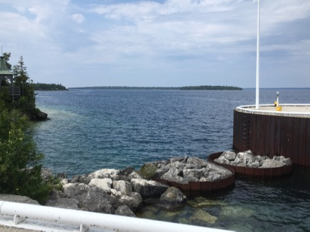
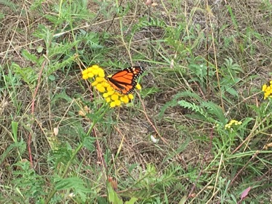

The justify-content Property
The "justify-content: space-around;" declaration displays the flex with space before, between, and after yhe lines.
The "justify-content: space-around;" declaration displays the flex with space before, between, and after yhe lines.
 The Lake Express at the dock in Milwaukee
The Lake Express at the dock in Milwaukee Top Deck of Lake Express
Top Deck of Lake Express Leaving Milwaukee
Leaving Milwaukee Wake
Wake The Beach at Goderich, Ontario, Canada
The Beach at Goderich, Ontario, Canada 
Boat Dock, Tobermory
Monarch Butterfly The Chi-Cheemaun approaching the dock in Tobermory
The Chi-Cheemaun approaching the dock in Tobermory